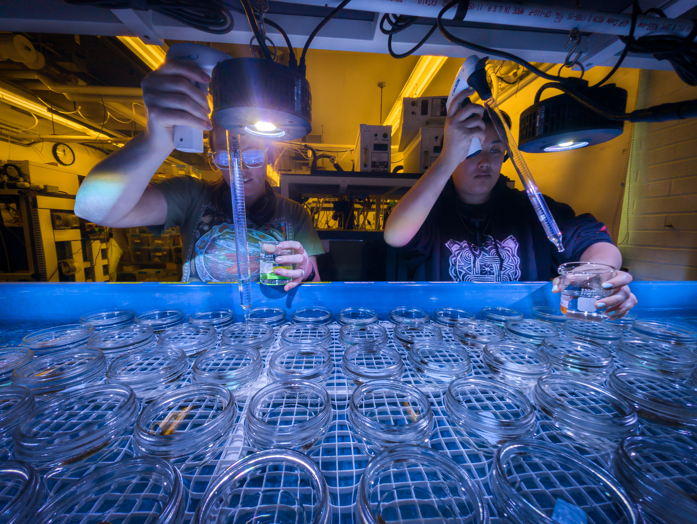

We prepared leachate for PVC (<500um) and for PP (aged)
Leachate dilution
We performed a serial dilution on each prepared leachate to create leachate treatments that represent a mass of microplastic type to volume of water:
100 mg/L
10 mg/L
1 mg/L
0.1 mg/L
0.01 mg/L
For this we took 20mL of the 1000 mg/L leachate, and added it to 180mL of filtered seawater to make the 100mg/L concentration.
We then serially diluted the remaining concentrations in a similar fashion.
Exposure
We exposed individual anemones to the leachate treatments for 48 hours in closed-systems. For this, we used 0.5 pint mason jars set in a recirculating seawater bath temperature-controlled by a heat exchanger and the Neptune Apex aquarium controller system.

The water bath was kept at 10C throughout the exposure.
Response measurements
After 48 hours we measured:
Rapid Light Curves using a Walz Diving II PAM
30 minutes of respirometry in the dark-adapted state (oxygen consumption, cellular respiration)
30 minutes of respirometry in the light-saturated state (oxygen production, photosynthesis)
wet weight
And then placed anemones in labelled 5mL centrifuge tubes and flash froze them in liquid-nitrogen
── Conflicts ────────────────────────────────────────── tidyverse_conflicts() ──
✖ dplyr::filter() masks stats::filter()
✖ dplyr::lag() masks stats::lag()
ℹ Use the conflicted package (<http://conflicted.r-lib.org/>) to force all conflicts to become errors
library(car)
Warning: package 'car' was built under R version 4.3.3
Loading required package: carData
Warning: package 'carData' was built under R version 4.3.3
Attaching package: 'car'
The following object is masked from 'package:purrr':
some
The following object is masked from 'package:dplyr':
recode
rates <-read_csv('rates.csv')
Rows: 55 Columns: 17
── Column specification ────────────────────────────────────────────────────────
Delimiter: ","
chr (2): id, treatment
dbl (15): run, channel, auto_resp_rate, auto_resp_r2, resp_bg_adj.rate, resp...
ℹ Use `spec()` to retrieve the full column specification for this data.
ℹ Specify the column types or set `show_col_types = FALSE` to quiet this message.
Respiration
First glimpse of data
ggplot(rates) +aes(x = treatment, y = massnorm_resp_rate, color = treatment) +geom_jitter() +theme(legend.position ="none")
Data normality
resp_aov <-aov(massnorm_resp_rate ~ treatment, data = rates)
par(mfrow =c(1, 2)) # combine plots# histogramhist(resp_aov$residuals)# QQ-plotqqPlot(resp_aov$residuals,id =FALSE# id = FALSE to remove point identification)
Df Sum Sq Mean Sq F value Pr(>F)
treatment 10 1.433e-10 1.433e-11 1.355 0.233
Residuals 44 4.652e-10 1.057e-11
Coming up next
Start the PAM Rapid Light Curve analysis
Extract RNA for gene expression of host anemone and symbiont dinoflagellate
Gaps & improvements
Important
We still need to be able to take the background signature of our filtered seawater using C18 SPME fiber extractions, preserve the fibers, and send them to the Saliu Lab for analysis
Note
We are limited to short exposures because of the 48 hour window we have to work with fresh leachate. We can get around this by making leachate in batches and doing water changes every 48 hours, but we will need larger stocks of microplastic with which to make the leachate if we want to pursue this